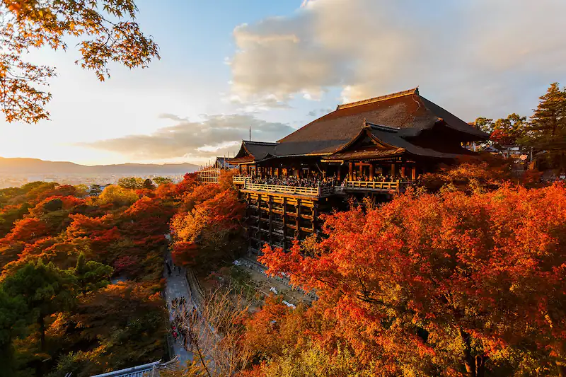

Kyoto, a city steeped in history and traadition, offers a mesmerizing blend of ancient and modern. Join me on a cirtual tour through Kyoto's iconic temples and enchanting gardens, as we ezplore the serene beauty gthat defines this cultural heart of Japan.
By Masayuki
Dive into thghe c=vibrant and bustling metropolis of Tokyo, where neon lights and historic shrines coexist in perfecr harmony. From the quirky ditricts of Harajuku to the tranquikity if Meiji SHrine, Tokyo is a city that never fails to amze. Join me as I unravel the tales of this dynamic city.
By Isabella
Osaka, known as the "Kitchen of Japan" is a have for food enthusiasts. From street-side stalls serving takoyaki to the famous Okonomiyaki restaurants, Osaka offers a culinary journey like no other. Let's explore the diverse and mouth-watering world of Osaka's street food and traditional delicacies.
By Yukio
Nestled on the coast of the Sea of Japan, Kanazawa boasts a rich cultural heritage and brethtaking landscapes. Join me as we wander through the historic streets of Higashi-Chaya, explore the impressive Knazawa Castle, and witness rhe artistry of Kenrouken Garden, one of Japan's most celebrated landscapes.
By Takeshi
Embark on a winter adventure in Hokkiado, where snow-covered landscapes and frosty temperatures create a magical wonderland. From the sapporo Snow Festival to teh tranquil beauty of SHikisaai-no-Oka flowe fields, Hokkaido is a destination that captivates with its unique winter charm.
By Yoshihiro
Kyoto, a city steeped in history and traadition, offers a mesmerizing blend of ancient and modern. Join me on a cirtual tour through Kyoto's iconic temples and enchanting gardens, as we ezplore the serene beauty gthat defines this cultural heart of Japan.
By Akihiro
Kyoto, a city steeped in history and traadition, offers a mesmerizing blend of ancient and modern. Join me on a cirtual tour through Kyoto's iconic temples and enchanting gardens, as we ezplore the serene beauty gthat defines this cultural heart of Japan.
By Hana
Kyoto, a city steeped in history and traadition, offers a mesmerizing blend of ancient and modern. Join me on a cirtual tour through Kyoto's iconic temples and enchanting gardens, as we ezplore the serene beauty gthat defines this cultural heart of Japan.
By Akemi
Kyoto, a city steeped in history and traadition, offers a mesmerizing blend of ancient and modern. Join me on a cirtual tour through Kyoto's iconic temples and enchanting gardens, as we ezplore the serene beauty gthat defines this cultural heart of Japan.
By Kenta
Kyoto, a city steeped in history and traadition, offers a mesmerizing blend of ancient and modern. Join me on a cirtual tour through Kyoto's iconic temples and enchanting gardens, as we ezplore the serene beauty gthat defines this cultural heart of Japan.
By Ayaka